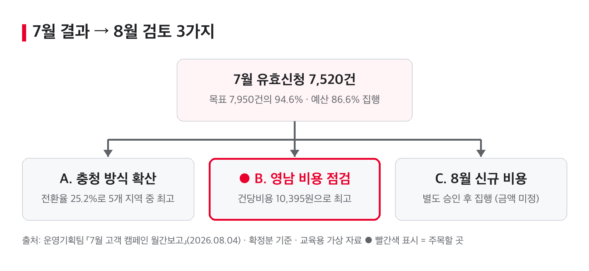

결론: 7월 유효신청 7,520건(목표의 94.6%), 예산 86.6% 집행 — 영남 비용 점검 필요 [확인]

| 지표 | 값 | 비교 기준 | 증감·비율 | 원문 위치 |
|---|---|---|---|---|
| 유효신청 | 7,520건 | 목표 7,950건 | ▼ −430건 (94.6%) [확인] | 슬라이드 5·8 |
| 집행액 | 6,060만 원 | 승인예산 7,000만 원 | 집행률 86.6% | 슬라이드 2·8 |
| 신청전환율 | 21.4% | 상담 35,150건 | — | 슬라이드 2 |
| 건당비용(전체) | 8,059원 [확인] | — | — | 계산: 6,060만 원 ÷ 7,520건 |
지역별 (집행액은 부가세 제외)
| 지역 | 집행액 | 유효신청 | 목표 달성률 [확인] | 전환율 | 건당비용 |
|---|---|---|---|---|---|
| 수도권 | 1,650만 원 | 2,080건 | 94.5% | 19.8% | 7,933원 |
| 충청 | 1,020만 원 | 1,610건 | 97.6% | 25.2% (최고) | 6,335원 |
| 호남 | 970만 원 | 1,300건 | 89.7% | 22.2% | 7,462원 |
| 영남 | 1,580만 원 | 1,520건 | 98.1% | 18.8% | 10,395원 (최고) |
| 강원·제주 | 840만 원 | 1,010건 | 91.8% | 23.5% | 8,317원 |
| 합계 | 6,060만 원 | 7,520건 | 94.6% | 21.4% | 8,059원 |
출처: 운영기획팀 「7월 고객 캠페인 월간보고」 (2026.08.04 월간 운영회의) · 교육용 가상 자료
확인 상태: [확인] 표시 6건 — 담당자 확인 전